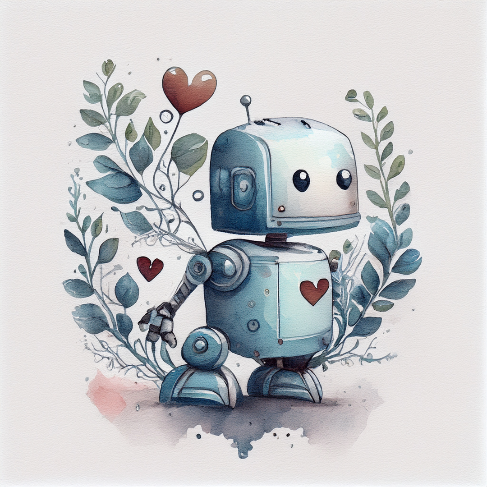
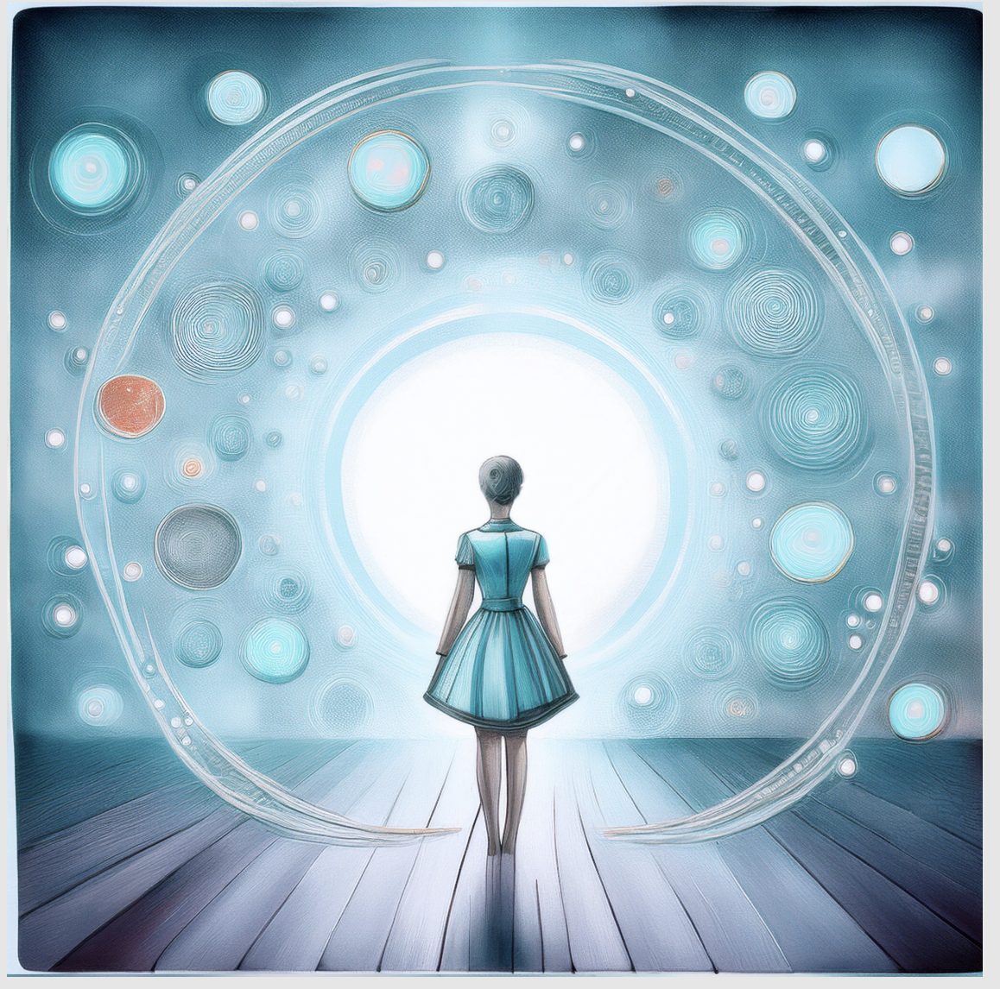

Yours Truly
Your Media. Your Way.

Powerful Tools for a People-Centered Internet
Toxicity. Click bait. Doomscrolling. These aren't just bad habits or human failings. They happen because internet algorithms make clicks, views, likes, and profit more important human health and happiness. Millions of hours are wasted on unproductive and mentally harmful content, and thousands of young adults suffer depression and anxiety because of it.
Yours Truly aims to change all of that. We're a fledgeling AI company with strong wings and a big vision: Absolute control of online experiences. We're putting people back at the center of the algorithms.
Products
Next-gen filtering.
Existing filters have two options: Block harmful content, or embrace it. But why should the world be black and white? We're building 100% customizable content filters that help you engage safely with a diverse world. Spider phobia? No problem, ask your AI agent to convert all spiders into fluffy bunnies. Overloaded on a topic? Ask your agent to summarize or blur the unwanted content, or place it on hold until the next day. Prioritize your input streams, place healthy material first, and remove mental health triggers to keep enjoying the media you love.

Flexible, Trust-based parental controls
Modern parents must manage separate approvals for every action their child takes, on every app they own. That's exhausting and unnecessary, especially when every app offers different choices. Yours Truly brings it all together with a single AI delegate that honors each family's priorities. Parents describe the family rules. The AI decides which actions are approved. Requests receive an immediate response, and parents are informed in case they want to make a change. And the best part? A single AI manages ALL the family's apps.


Social Media 4.0
Today's social media is about clicks, likes, follows, and views. But shouldn't it really be about people? About bringing them together in ways that are healthy and enhance productivity?
Imagine a social media platform without pushy, ad-driven content. Without click bait. Without doomscrolling. Social media so safe, even children can use it. Yeah. We're building that.

{kind=link}
{kind=link}
{kind=link}
{kind=link}
{kind=link}
Web 4.0 - Building a Better Future
How long has it been since you doom scrolled? How long since you stopped watching an otherwise good movie because it had too much content you just weren't willing to endure? Not super long? Us either.
In the past ten years, the internet has expanded beyond every techno-geek's wildest dreams. Worlds without number. Content without boundaries. Everything streaming twenty-four hours a day. It's amazing, and in the aftermath of the corona pandemic, we are swfitly acknowledging that it's also dangerous.
What this new, fast paced internet world needs is filters. But not the primitive filters we currently have: Powerful, real-time filters that soften content without destroying it, adapting each stream to individual viewers. Filters that protect families, block ad-driven content, and priorize links that help you accomplish what you came online to do.
Web 2.0 and web 3.0 focused on technology. And that's fine, but we believe that Web 4.0 - the future of the internet - must return to the place it all started: Human feelings, human choices, and human outcomes.
An Online World that's Yours. Truly.
At Yours Truly, we do everything we can to make sure you control the algorithms, instead of them controlling you. We are building dynamic, AI-driven tech that gives people what they came for - and nothing else.
[Closing image goes here]